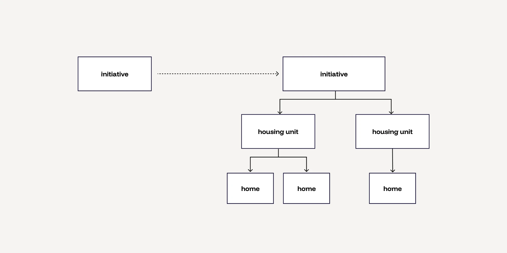

CrowdBuilding
2026
Making the offering concrete
CrowdBuilding presented housing initiatives through renders and long texts about their values. Home seekers, it turned out, decide on size, price and when they can move in. I shifted discovery from initiatives to available homes, and mapped where the model breaks: housing cooperatives.
- Role
- Senior Product Designer, sole designer
- Company
- CrowdBuilding
- Scope
- Discovery, home listings
- Platform
- Web
01
Impact
- Listings in the first week
- 8
- Increase in returning users
- +16%
- Increase in active users
- +5%
- Homes became visible. Discovery moved from a list of initiatives to a listing of available homes.
- A new revenue stream. Initiatives can pay to list and promote their homes, through tiered promotion packages.
- An open problem, mapped. A proposed direction for housing cooperatives, already 35–40% of listings, where the model doesn’t fit.
02
Context
CrowdBuilding was built to show housing initiatives: a few renders, and a lot of text about who the group is and what they value. Discovery was an index of those initiatives.
The idea was that a strong story would attract the right home seekers. A home seeker would read about the group, feel connected, and get in touch.
This was partly true, but to make a decision, people needed more details, such as the price range or the units an initiative is planning to build.
03
Problem
How big, how much, and when?
Home seekers decide on concrete things: how big the home is, what it costs, and when they can move in. On CrowdBuilding, that information was hard to find or missing entirely. A story creates interest, but it doesn’t answer the questions that decide whether someone takes the next step.
Showing those facts came with its own challenge. These homes are still being developed. Prices are estimates, and delivery dates can be years away and can slip. The design had to be concrete without promising more certainty than anyone had.


04
Assumptions
What we got wrong
We assumed a story about the initiative was enough to attract home seekers.
What happened Home seekers decide on size, price and move-in date. The story created interest, but the facts drove the decision.
What changed Homes became visible, and discovery shifted from an index of initiatives to a listing of available homes, closer to a real estate site.
We assumed every project would have homes to list.
What happened That holds for CPO projects, where people buy a specific home. It breaks for housing cooperatives, where there is no fixed home or price to list until late in the process.
What changed It became the open problem this case study ends with: where the model breaks.
05
Decisions
Three decisions, three trade-offs
List homes, not only initiatives
Each available home became visible with its size, price and expected delivery, and discovery became a listing of homes, closer to a real estate site.
Trade-off: the initiative’s story moves out of the spotlight, and the platform starts to look more like a property portal than a community.
Be honest about uncertainty
Homes still in development carry estimated prices and delivery dates that can be years away and can slip. Listings had to make that clear instead of hiding it.
Trade-off: honest estimates look less certain than a polished property listing, which can make a home feel less real.
No unit creation flow, yet
Initiatives can’t add their own homes. We wanted to stay lean, and with low volume expected at first, our team adds the listings itself.
Trade-off: every new listing depends on our team’s time, and it won’t scale as the number of listings grows.
06
Solution
Homes are now listed individually, with the facts home seekers decide on. Home seekers browse available homes instead of reading through initiatives one by one.
Admins also needed somewhere for applications to land. I designed a dashboard where they can see and compare applicants, review each application, send a message, remove someone from the list, or make them a member of the initiative.
We scoped it deliberately. Accepting or rejecting someone for a home happens elsewhere, so the dashboard stays focused on one job: seeing who applied and getting in touch with the people admins like.
07
Open problem
Where the model breaks
You buy a specific home
- A known unit, size and price
- Estimated, but listable from day one
You join, then members decide who lives where
- Members usually rent from the cooperative
- Who gets which home is decided late, by the members themselves
- No fixed home or price to list
Listing homes works for CPO, where a group commissions homes together and each member buys a specific one. It doesn’t work for a wooncoöperatie, a housing cooperative. There, members usually rent from the cooperative, and which home each member gets is decided late in the process by the members themselves. There’s no fixed unit or price to list. This problem isn’t solved yet.
My proposed direction: list the place in the cooperative, not a home, and describe the pool honestly.
Show the housing mix, personally
For example 2 three-bed, 10 two-bed and 8 one-bed homes, and what that means for you: “2 of 20 homes would suit your household”.
Show cost as a range
A range of monthly costs plus any member contribution, clearly marked as an estimate.
Make allocation rules visible
Whether homes go by merit, need, lottery or seniority becomes a standard part of every listing.
One search, two card types
Shared filters across all projects, with separate cards for CPO homes and cooperative places.
Start with research
Find the minimum common data model across cooperatives before designing the listing itself.
Concept · not shipped
De Groene Hof, wooncoöperatie in Utrecht
2 three-bed10 two-bed8 one-bed
2 of 20 homes would suit your household
- Monthly cost
- €850–1,150 estimate
- Member contribution
- €5,000 estimate
- Who gets which home
- Decided by members, by need
Why it matters. Cooperatives are already 35–40% of listings. Policy in 2026 points to more of them, including a cooperative housing bill passed by the Tweede Kamer and a €60.6M fund for cooperative housing. The open problem is where CrowdBuilding’s next chapter is.